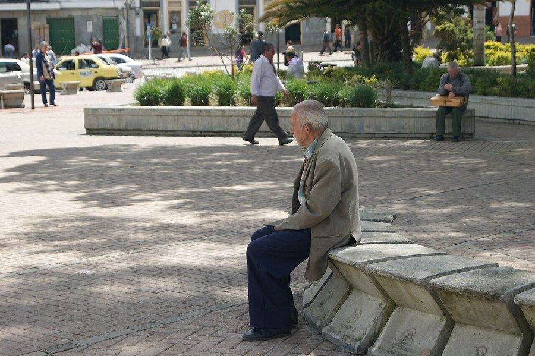

Eyewitness Testimony and Memory: Why Confident Witnesses Can Still Be Wrong
A witness who says "I'll never forget that face" can still be wrong. Memory doesn't record events like a camera. It rebuilds them, and that rebuilding leaves room for error.

Key takeaways
- Memory is reconstructive, not a recording. Each time a witness recalls an event, the brain rebuilds it, and small details can shift in the process.
- Confidence and accuracy are not the same thing. A witness can sound completely certain and still be mistaken.
- Stress and weapon focus narrow attention during a crime, often at the cost of facial detail.
- Leading questions and biased lineups can distort memory after the fact, sometimes without the witness noticing.
- Reforms like blind, sequential lineups measurably reduce misidentification risk.
Eyewitness testimony sounds like the strongest kind of evidence there is. Someone was there. They saw it happen. But decades of memory research point to an uncomfortable fact: eyewitness memory is fallible in specific, well-documented ways, and misidentification has played a role in a large share of wrongful convictions later overturned by DNA evidence.
None of this means witnesses are lying or unreliable in general. It means memory doesn't work the way most people assume it does.
Why memory isn't a recording
It's tempting to think of memory as something like a video file, stored intact and played back on demand. Cognitive research describes something closer to reconstruction. Each time a memory is recalled, the brain rebuilds it from fragments, and that rebuilding process can pull in details from other sources, expectations, or things learned after the event.
This matters most for eyewitness accounts because the reconstruction happens under conditions that already work against accurate encoding. A crime is often brief, unexpected, poorly lit, and frightening, exactly the conditions least favorable to forming a sharp, complete memory in the first place.
Why confident witnesses can still be wrong
Confidence feels like it should track accuracy. In controlled lab conditions, right after an event, there's some relationship between the two. But that relationship weakens badly over time and can be distorted entirely by what happens between the event and the testimony.
Feedback is a major factor. If a witness picks someone from a lineup and an officer says "good, that's who we thought it was," the witness's confidence can shoot up, even if the identification was wrong. By the time that witness testifies, months later, they may recall feeling certain from the start. The memory of their own confidence has been reshaped along with everything else.
The misinformation effect
One of the most influential lines of research in this area, associated with psychologist Elizabeth Loftus, involves what's called the misinformation effect. In these studies, people who watch an event and are later exposed to subtly incorrect information about it, through a leading question or a misleading detail, often incorporate that wrong information into their own memory of what happened. They're not making it up. They genuinely come to believe it.
A witness asked "how fast was the car going when it smashed into the other car" tends to report higher speeds, and sometimes recalls broken glass that was never there, compared to a witness asked the same question with the word "hit" instead of "smashed." Wording alone can shift the memory that gets reported later.
COMPLEX
The memory formula we rate highest in 2026
One formula combined a fully transparent, clinically-dosed label — citicoline, bacopa, phosphatidylserine and B-vitamins — with a 60-day guarantee.
See Today's Price →Stress, weapons, and narrowed attention
High stress during an event doesn't simply blur memory across the board. It tends to narrow attention toward the most threatening or central element of the scene, sometimes called weapon focus. A victim staring at a gun may retain less detail about the person's face, because attention was consumed by the weapon rather than divided evenly across the whole scene.
Very high arousal has also been linked to poorer identification accuracy overall, not better, which runs against the common assumption that a frightening, memorable event automatically gets encoded more strongly. It's genuinely memorable in the emotional sense. That doesn't guarantee the visual details are stored with any more precision.
The cross-race effect
Research has repeatedly found that people are, on average, less accurate at recognizing faces of a race different from their own, a pattern known as the cross-race or own-race effect. It shows up across many studies and populations and isn't fully explained yet, though reduced everyday contact with other-race faces appears to play a role. It's a factor that legal systems and juries are still catching up to.
How lineups and interviews can go wrong
A lot of distortion doesn't happen during the crime. It happens afterward, in how the case is investigated. An officer who already suspects someone can unintentionally signal that suspicion through tone, phrasing, or which photo gets shown last. A simultaneous lineup, where all options appear at once, can invite relative judgment, picking whoever looks most like the suspect compared to the others, rather than an absolute judgment of whether the true culprit is even present.
Repeated interviews carry their own risk. Each retelling is a fresh reconstruction, and each one is a chance for outside information, a detective's assumption, a news report, another witness's account, to blend into the memory being described.
What's changed to fix this
Some of this is now addressed through procedural reform rather than asking witnesses to somehow try harder. Double-blind lineup administration, where the officer running the lineup doesn't know who the suspect is, removes a channel for unintentional cueing. Sequential lineups, showing one photo at a time rather than all at once, push witnesses toward an absolute judgment instead of a relative one. Recording the identification procedure and capturing the witness's stated confidence immediately, before any feedback, preserves a cleaner record than a courtroom recollection formed much later.
Many jurisdictions have adopted some version of these reforms, though practice still varies. Where they've been studied, they tend to reduce false identifications without meaningfully reducing correct ones, which is the best outcome a reform like this can offer.
What this means if you witness something
If you're ever in the position of describing an event you witnessed, a few habits help. Write down what you remember as soon as possible, before discussing it with anyone else, including other witnesses. Be honest about uncertainty rather than filling gaps to sound more complete. And understand that a detail feeling vivid and certain in your mind is not, on its own, proof that it's accurate. That's simply how memory works for everyone, not a personal failing.
This connects to a broader pattern covered in our piece on false memories, where entirely fabricated events can come to feel as real as genuine ones. The same reconstructive process is at work, just in a more dramatic form. Building a generally sharper, more reliable memory day to day, the subject of our guide to improving your memory, doesn't make eyewitness memory immune to these effects, but a well-rested, less stressed brain does tend to encode new information more completely.
Frequently asked questions
Is eyewitness testimony reliable?
It can be accurate, but it's less reliable than most people assume. Memory is reconstructive rather than recorded, and factors like stress, leading questions, and biased identification procedures can distort it, sometimes without the witness noticing.
Why do confident witnesses get it wrong?
Confidence can be shaped by events after the original memory, such as feedback from investigators or repeated retellings. A witness can feel completely certain while still being mistaken, especially by the time a case reaches trial months or years later.
What is the misinformation effect?
It's a well-documented phenomenon where exposure to incorrect information after an event, through a leading question or misleading detail, gets incorporated into a person's memory of what actually happened. People genuinely come to believe the altered version.
What is weapon focus?
It describes how attention during a threatening event, like seeing a weapon, tends to narrow toward the weapon itself, often at the cost of encoding other details such as the perpetrator's face.
How are lineups being improved to reduce mistakes?
Reforms include double-blind administration, where the officer doesn't know who the suspect is, sequential rather than simultaneous presentation of options, and recording the witness's confidence immediately after the identification, before any feedback can shape it.
Memory is more fragile than it feels
Eyewitness memory shows how easily recall can bend under stress and outside influence. Supporting your brain's everyday function starts with the basics. See the memory formulas our editors rate highest for 2026.
See the Top 5 Memory Formulas →Related: False memories explained · Inattentional blindness and memory · How to improve your memory · Best memory formulas of 2026